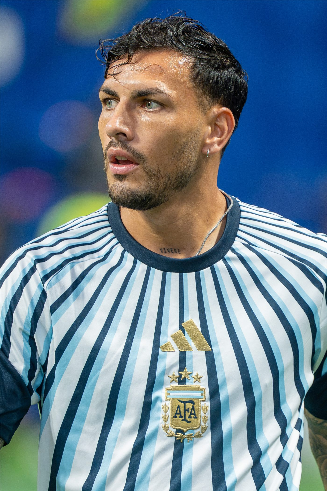

월드컵 결승 후폭풍… 아르헨티나 선수, 경기 뒤 상대 얼굴 가격해 퇴장
북중미 월드컵 결승에서 스페인에 진 아르헨티나 선수가 경기 후 상대 선수의 얼굴을 주먹으로 가격해 레드카드를 받았다. 스포츠 정신 논란이 일었다.
전홍발 기자 · 2026.07.24
橋국제

결승에서 패한 아르헨티나의 한 선수가 경기 종료 후 스페인 벤치 멤버의 얼굴을 주먹으로 가격해 퇴장당했다고 조선일보·연합보가 전했다. 격정적인 결승 뒤 벌어진 물리적 충돌에 축구계 인사들의 비판이 이어졌다.
광고 문의 · 300×250명예를 건 큰 경기일수록 승패의 무게가 크지만, 경기장 안팎의 폭력은 어떤 이유로도 정당화되기 어렵다는 것이 스포츠계의 오랜 원칙이다.
대회 규정상 이런 행위는 추가 징계로 이어질 수 있으며, 관련 기구가 사안을 검토할 것으로 보인다. 팬들 사이에서도 실망과 비판의 목소리가 나왔다.
華橋時報는 승패의 드라마보다 스포츠가 지켜야 할 가치를 먼저 짚는다. 경쟁의 열기 속에서도 상대에 대한 존중이라는 원칙이 무너지면, 경기의 감동도 함께 빛을 잃는다.
출처·참고 (사실 확인용 — 본문은 직접 재작성)
· 朝鮮日報
· 聯合報
· 朝鮮日報
· 聯合報